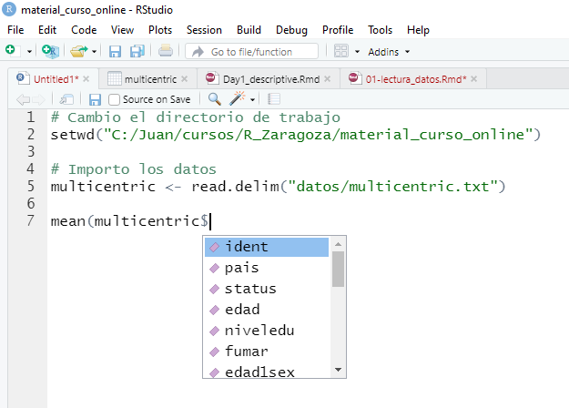

3 Manejo de datos: recodificación y transformación
Una vez importados los datos, ya podemos empezar con nuestros análisis estadísticos. Pero antes, mostraremos cómo crear nuevas variables ya que a menudo, antes de empezar con los análisis necesitamos crear o recodificar nuevas variables que contengan la información que queremos tratar. Seguiremos usando los datos guardados en el fichero multicentric.txt que están cargados en un objeto llamado multicentric. La idea es que en el script que habéis abierto, podéis ir escribiendo estos comandos de R y ver por la consola qué resultados obtenéis. Recordad que cuando escribáis la instrucción, la podéis ejecutar con el boton “Run” que tenéis arriba a la derecha en la ventana del scipt o bien situando el cursor en la linea de comando y clickando “Crtl + R”. En este material, el primer recuadro en gris corresponde al comando que tenéis que escribir en el script (ventana superior-izquierda de RStudio) y el siguiente recuadro en gris muestra lo que veríais por la línea de comandos (ventana inferior-izquierda de R studio)
Empezemos viendo qué datos tenemos. Para ello usaremos la función head()
ident pais status edad niveledu fumar edad1sex regcompa totcompa ets co edinico edfinco durco condon embara edademba nembara
1 10001 Brasil Control 64 primaria ex-fumador 16 2 2-3 si no NA NA NA no si 16 9
2 10002 Brasil Caso 51 primaria fumador 17 1 1 si no NA NA NA no si 17 13
3 10003 Brasil Control 48 ninguno fumador 14 2 2-3 no no NA NA NA no si 14 11
4 10004 Brasil Caso 49 ninguno no fumador 23 1 1 no no NA NA NA no si 23 13
5 10005 Brasil Control 41 primaria no fumador 23 1 1 no no NA NA NA no si 24 3
6 10006 Brasil Caso 45 primaria fumador 18 1 1 no si 22 38 14 no si 18 5
pap edad1pap vph
1 si 40 negativo
2 si 45 positivo
3 no NA positivo
4 no NA positivo
5 si 30 negativo
6 si 33 positivoPara saber cuántos individuos y cuántas variables tenemos en nuestra base de datos podemos usar la función dim(). nrow() nos daría el número de individuos y ncol() el número de variables
[1] 2910 21[1] 2910[1] 21También podemos ver qué tipo de variables tenemos y cuáles son sus categorías
'data.frame': 2910 obs. of 21 variables:
$ ident : int 10001 10002 10003 10004 10005 10006 10007 10008 10009 10010 ...
$ pais : chr "Brasil" "Brasil" "Brasil" "Brasil" ...
$ status : chr "Control" "Caso" "Control" "Caso" ...
$ edad : int 64 51 48 49 41 45 51 42 58 76 ...
$ niveledu: chr "primaria" "primaria" "ninguno" "ninguno" ...
$ fumar : chr "ex-fumador" "fumador" "fumador" "no fumador" ...
$ edad1sex: int 16 17 14 23 23 18 29 19 22 27 ...
$ regcompa: int 2 1 2 1 1 1 1 2 1 1 ...
$ totcompa: chr "2-3" "1" "2-3" "1" ...
$ ets : chr "si" "si" "no" "no" ...
$ co : chr "no" "no" "no" "no" ...
$ edinico : int NA NA NA NA NA 22 30 32 NA NA ...
$ edfinco : int NA NA NA NA NA 38 38 32 NA NA ...
$ durco : int NA NA NA NA NA 14 8 1 NA NA ...
$ condon : chr "no" "no" "no" "no" ...
$ embara : chr "si" "si" "si" "si" ...
$ edademba: int 16 17 14 23 24 18 29 20 22 30 ...
$ nembara : int 9 13 11 13 3 5 1 7 8 2 ...
$ pap : chr "si" "si" "no" "no" ...
$ edad1pap: int 40 45 NA NA 30 33 45 NA 42 38 ...
$ vph : chr "negativo" "positivo" "positivo" "positivo" ...Antes de explicar cómo crear nuevas variables, veamos algunos aspectos básicos de R en cuanto al acceso de las variables. Supongamos que queremos calcular cualquier estadístico descriptivo de alguna de las variables o ver un resumen de ella. Para esta tarea podemos utilizar distintas funciones de R que normalmente se ejecutan como funcion(). Dentro del paréntesis debemos indicarle cuál es la variable que queremos analizar. Para ello, utilizaremos el símbolo $ [también podría usarse [[ ]] pero intentaremos evitar escribir demasiado código]. Así, por ejemplo, si queremos calcular la media de la primera relación sexual (variable edad1sex) bastaría con ejecutar
[1] 19.72932NOTA: na.rm=TRUE debe escribirse porque si no, R devuelve NA cuando hay missings en una variable. Con esta opción se analizan casos completos. También es interesante conocer estas otras funciones.
- Descriptiva de una variable categórica. Ejemplo: cuantas mujeres hay de cada país
Brasil Colombia Espaia Filipinas Marruecos Peri Tailandia
347 323 376 636 332 312 584 - Descriptiva de una variable continua. Ejemplo: edad de las participantes
Min. 1st Qu. Median Mean 3rd Qu. Max.
20.00 40.00 49.00 48.86 58.00 84.00 Uno de los aspectos que más cuestan al principio de usar R es familiarizarse con la escritura de código. Rstudio nos ayuda puesto que podemos autocompletar el nombre de una base de datos o de una función. Por ejemplo, basta con empezar a escribir “multi” y dar al tabulador para que en el script se autocomplete la palabra “multicentric”. Una vez escrito el nombre de la base de datos, si escribimos el símbolo $ obtenemos un desplegable que nos muestra todas las variables que hay en ese objeto y basta con seleccionar la variable que queremos resumir para que R la ponga directamente en el script tal y como muestra la siguiente figura.

También podemos acceder a una variablae usando [ e indicando el número de columna donde está la variable que queremos resumir o su nombre. En este caso como edad1sex está en la columna 7 escribiríamos
[1] NAo usando su nombre
[1] NApero como se ha indicado anteriormente, lo más sencillo es usar $ ya que ayuda a evitar errores en la escritura que es uno de los principales problemas para principiantes.
3.1 Creación de variables
Para crear una nueva variable, por ejemplo la edad de la primera relación sexual menos 18, tendríamos que escribir
Donde a la izquierda de <- se pone el nombre de la nueva variable que queremos añadir a multicentric (por eso se pone el $) y a la derecha la operación que queremos hacer. NOTA: el símbolo <- es como un = pero este último se usa para los argumentos de una función (lo veremos más adelante).
Esta forma de escribir es muy larga y complicada, sobre todo para los nuevos usuarios de R, y puede introducir errores fácilmente. Es por ello que podemos trabajar con una serie de librerías que facilitan llevar a cabo estas operaciones. Estas liberías forman parte de los desarrolladores de RStudio y son un compendio de funciones para el análisis científico de datos (Data Science). Si queremos usar estas funciones, debemos instalar las librerías de tydiverse [https://www.tidyverse.org/] ejecutando:
Después debemos cargar estas librerías con
Ahora, para crear una nueva variable basta con usar la función mutate() que tiene el primer argumento el nombre de nuestra base datos y luego la fórmula que queremos aplicar para calcular la nueva variable. Nos fijamos que ya no es necesario el uso de $ y la instrucción se lee de forma más intuitiva.
Si ahora damos un vistazo a las variables que hay en multicentric veremos que al final se ha añadido una nueva variable (edad1sex2) que es la que hemos creado
'data.frame': 2910 obs. of 22 variables:
$ ident : int 10001 10002 10003 10004 10005 10006 10007 10008 10009 10010 ...
$ pais : chr "Brasil" "Brasil" "Brasil" "Brasil" ...
$ status : chr "Control" "Caso" "Control" "Caso" ...
$ edad : int 64 51 48 49 41 45 51 42 58 76 ...
$ niveledu : chr "primaria" "primaria" "ninguno" "ninguno" ...
$ fumar : chr "ex-fumador" "fumador" "fumador" "no fumador" ...
$ edad1sex : int 16 17 14 23 23 18 29 19 22 27 ...
$ regcompa : int 2 1 2 1 1 1 1 2 1 1 ...
$ totcompa : chr "2-3" "1" "2-3" "1" ...
$ ets : chr "si" "si" "no" "no" ...
$ co : chr "no" "no" "no" "no" ...
$ edinico : int NA NA NA NA NA 22 30 32 NA NA ...
$ edfinco : int NA NA NA NA NA 38 38 32 NA NA ...
$ durco : int NA NA NA NA NA 14 8 1 NA NA ...
$ condon : chr "no" "no" "no" "no" ...
$ embara : chr "si" "si" "si" "si" ...
$ edademba : int 16 17 14 23 24 18 29 20 22 30 ...
$ nembara : int 9 13 11 13 3 5 1 7 8 2 ...
$ pap : chr "si" "si" "no" "no" ...
$ edad1pap : int 40 45 NA NA 30 33 45 NA 42 38 ...
$ vph : chr "negativo" "positivo" "positivo" "positivo" ...
$ edad1sex2: num -2 -1 -4 5 5 0 11 1 4 9 ...3.2 Recodificación de variables
En biomedicina a veces interesa recodificar nuevas variables según varios criterios. Veamos algunos ejemplos
- Recodificar una variable continua en una categórica que toma valores superiores o inferiores a un valor. Ejemplo: edad de primera relación sexual antes o despues de 18 años
multicentric <- mutate(multicentric, edad1sex3 = ifelse(edad1sex <=18, 0 , 1))
table(multicentric$edad1sex3)
0 1
1379 1510 - Recodificar una variable continua en cuartiles. Ejemplo: edad de primera relación sexual en cuartiles
multicentric <- mutate(multicentric, edad1sex4 = cut(edad1sex, quantile(edad1sex, na.rm=TRUE)))
table(multicentric$edad1sex4)
(5,16] (16,19] (19,22] (22,52]
736 872 596 684 - Recodificar una variable según unos puntos de corte y ponerles una etiqueta. Ejemplo: edad de primera relación sexual antes de los 14, entre los 15 y 18 (ambos incluidos) y más de los 18 (19 o más)
multicentric <- mutate(multicentric, edad1sex5 = cut(edad1sex, c(-Inf, 14, 18, Inf),
labels=c("<14", "15-18", "19+")))
table(multicentric$edad1sex5)
<14 15-18 19+
257 1122 1510 También podemos filtrar una base de datos para hacer unos análisis específicos. Supongamos que queremos describir nuestros controles. Más adelante veremos cómo realizar estos análisis descriptivos, pero ahora aprendamos a cómo crear una nueva base de datos (en R un nuevo objeto) que más tarde resumiremos. Para ello utilizaremos la función filter(). Sabemos que el estado Caso/Control se encuentra en la variable status por eso escribimos
[1] 1421 25Usamos == para poner una condición de igualdad. Para otras condiciones deberemos usar

Por ejemplo, si queremos seleccionar a los casos que hayan tenido una infección por VPH (variable vph) deberíamos hacer
[1] 1190 25